一键搭建独立VPN节点 - 跨境运营科学上网保姆级教程
100%解锁主流媒体：tk(tiktok)、脸书(Facebook/Meta)、油管(YouTube)、迪士尼(Disney+)、推特(推特)、奈飞(Netflix)，支持chatGPT、Claude3
独立VPN节点 - 跨境电商与海外社媒运营的新动能
许多小伙伴刚接触跨境这块时，都会倾向于去选择一些性价比较高的共享VPN，例如：机场节点、共享节点梯子等。
如果你是单纯用来浏览资讯新闻，刷刷Tiktok、Facebook、Youtube等一类社交媒体，这些便宜的机场节点基本能满足需求。
但如果你是从事跨境电商、社媒、短视频运营等，共享VPN恰恰会成为你成功路上最大的绊脚石！
相信从事affiliate、tiktok运营的小伙伴都已经深有体会。
自己辛苦做出来的账号突然永久被封、账户资金无法提现、银行账户被冻结等等，这些问题，大概率是由于网络节点造成的！
所以，强烈推荐小伙伴们使用独享的VPS。
这时，又有不少小伙伴购买了外面一些号称是独立节点的VPN后发现，以前存在的问题一个也没少。
为啥呢？
因为，外面那些所谓的独享节点，90%都不只你一个人在用。就给你一个账号密码，你又怎能确定只给你一个人呢？
最好的办法，就是自己买VPS服务器，自己把节点搭建起来，这样才能保证是100%独享。
但是，并非所有小伙伴都是技术出身，不懂如何搭建独立节点，该怎么办？
不用着急，下面我会给大家提供一个脚本，完全傻瓜式操作，一键搭建起你的专享节点！
在搭建之前，咱们先来看看，哪些VPS服务商适合作为我们搭建节点的服务器
适合跨境业务的VPS
我也是一名跨境从业者，上面提到的坑一个没少踩。当初因为贪小便宜买了个一年100多块的机场VPN，导致联盟账号上的1万多刀佣金被冻结。同样是因为节点问题，辛苦运营了两年多亚马逊账号说被封就被封，还无法申诉。因为IP的问题，tiktok被限流了，多个视频播放量卡200，甚至还出现了0播放。
一个个血与泪的教训只说明了独立节点的重要性！
那么，市面上这么多VPS服务提供商，服务质量参差不齐，我们应该如何选择？
结合我自身教训以及对众多VPS服务商的考察，影响选择的因素集中在两点：线路和IP。
线路方面：
一家拥有优质网络线路的服务商，能够最大限度保障网络的稳定性与低延迟。
我们会发现，一般到晚高峰时期，网速都变得贼慢。原因是我们的网络一般走电信163骨干网或者联通169网，晚高峰拥堵的时候访问外网异常慢。
那有没办法解决？
答案是肯定的！
中国电信架设了一个专门给高级政企客户使用的自治网CN2，其下的CN2 GIA是有名的国际高端优质网络线路，只要我们的VPS是接入了该线路，我们就能享受低延迟的优质网络。
这里，我推荐搬瓦工。
搬瓦工是来自加拿大IT7 Networks旗下的一家主营中高端线路的VPS主机商，成立于2012年，以提供高性价比VPS 服务和优质的客户支持而广受好评。其英文名为BandwagonHost，由于发音类似 Ban Wa Gong，因此国内一般将其音译为搬瓦工。
搬瓦工在多个方面都有很大的优势：
- 性能稳定：搬瓦工VPS机器稳定，VPS在线率达到99.99%以上，几乎不会宕机。
- 线路质量好：搬瓦工VPS线路接入电信CN2 GIA、联通9929等多条高端线路，延迟低速度快。不像其它VPS服务商，搬瓦工要保证线路质量，套餐均是限量发售且绝不超售，一些性价比的CN2 GIA套餐一补货就会被人一抢而空。因此，搬瓦工的VPS甚至成为了跨境人员的理财产品。
- 价格实惠：同样是CN2 GIA线路，搬瓦工能够比同行以更优惠的价格提供更稳定的机器、更优质的服务。
- 30天无理由退款：大家可以先试用一下，用得不爽随时退掉。而且申请退款非常简单方便，只需点个按钮即可，无需专门发邮件提交申请，而且退款速度很快，一般最慢两天钱就能原路退回。
优惠码：BWHCCNCXVV
IP方面：
海外社交媒体、短视频、电商等运营对IP的要求很高，包括：IP稳定不跳节点、纯净度、原生度、类型等因素。
机场VPN由于多人共享节点，IP也是多人共用。部分IP甚至被列入了黑名单，如果你还使用这些IP去运营你的跨境业务，不就等于自己往坑里跳吗？
以tiktok为例，平台禁止非允许地区的IP进行访问，不仅仅是无法访问，严重还会封号。而对于短视频运营，IP是否原生和IP类型成为了你能否从平台获取流量的关键。
什么是原生IP？简单来说，IP所在地与注册地一致即为原生IP，通常指的是直接从互联网服务提供商获得的IP地址，而不是通过代理服务器或VPN等其他方式获得的IP地址，区别于广播IP。
IP类型可分为ISP、business、hosting，ISP为住宅IP，business是商业IP，hosting则为机房IP。具体区别可自行搜索。
跨境运营，建议使用原生住宅(ISP)IP。
这里提供网址：https://ipinfo.io，可以检测IP的类型以及是否原生。如下图所示，俩处的country一致为原生IP，不一致则非原生。type处显示该IP的类型。
一般提供原生住宅IP的VPS都比较贵，综合比较之下，我推荐一家性价比超高的服务商：丽萨主机(lisahost)。
丽萨主机的优势：
- 双ISP原生住宅IP：一般市面上提供ISP的VPS都只有单ISP，而丽萨主机提供的双ISP具有更好的网络稳定性和可靠性，并增加带宽和速度。
- 全流媒体解锁：tk(tiktok)、油管(YouTube)、脸书(Facebook/Meta)、推特(Twitter)、奈飞(Netflix)、迪士尼(Disney)等等各大流媒体及社交媒体平台都能畅通访问。
- IP纯净：IP干净无污染，与黑名单说拜拜。
- 48小时无理由退款：与搬瓦工相比差点意思，但总比不能退款强。
优惠码：TS-CBP205DQJE
如何在VPS上搭建独享VPN节点？
购买VPS后，使用命令行通过SSH登录到你的服务器上。Windows用户推荐使用XShell，Mac用户使用自带Terminal工具。
不懂如何使用命令行工具的小伙伴，可登录VPS服务商的控制台，控制台中一般带有网页版命令行工具，以下是搬瓦工的控制台示例：
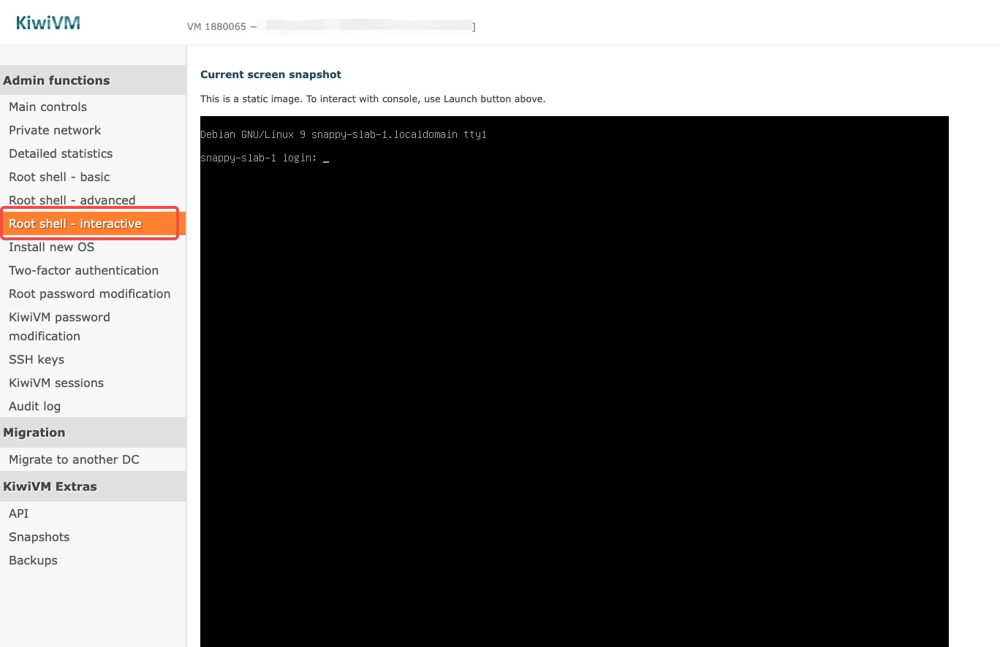
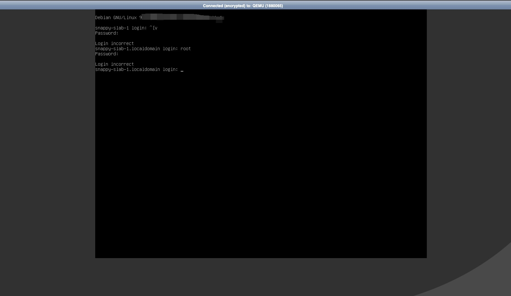
登录服务器后，执行以下命令，安装梯子服务：
bash <(curl -fsS https://github.com/marvellouswin/vps/raw/main/install.sh)命令会同时安装vless和hysteria2两种协议，方便大家选择合适的。
安装非常简单，按照脚本提示操作即可，如无特殊要求，一直点回车选择默认即可。
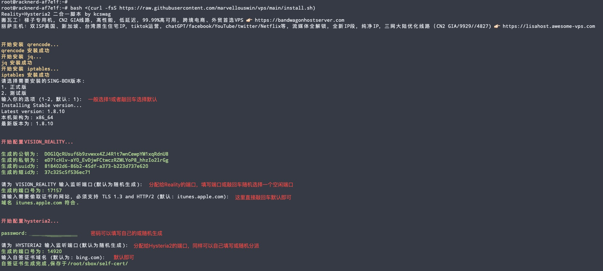
安装成功后，分别生成了Reality、Hysteria2、Clash Meta、sing-box 四种配置，先保存起来，后面配置会用到。
Reality链接及二维码：↓
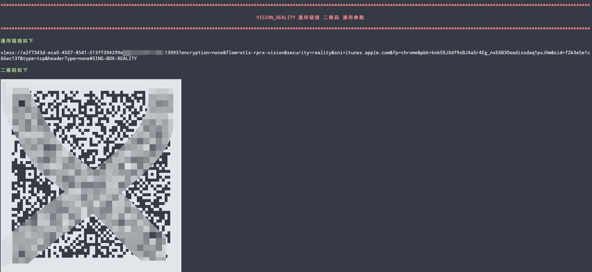
Hysteria链接及二维码：↓
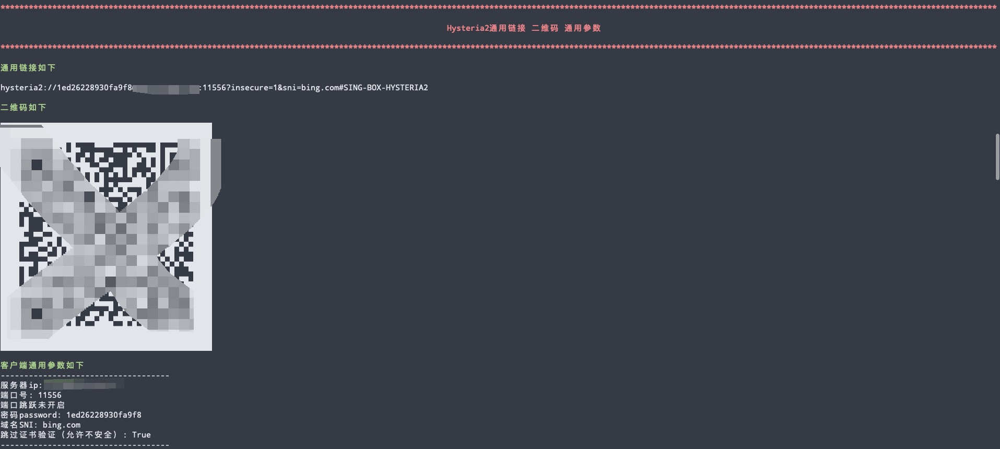
Clash Meta详细配置：↓
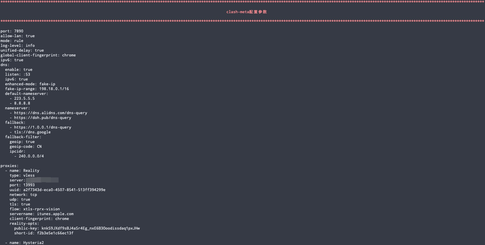
Sing-box详细配置：↓

操作服务器太复杂，又不想花钱找人帮忙，还有其它办法吗？
答案是肯定的！
如果你确实觉得去操作服务器太繁琐，这里还有一个办法：Just My Socks
Just My Socks是啥玩意？它是搬瓦工旗下，专门给咱们国人提供VPN的服务商。与搬瓦工一样是精品CN2 GIA线路，可选地区有美国、日本和香港。
进入Just My Socks的网站以后，挑选你要的套餐。

目前Just My Socks有16种套餐：
| 方案名称 | 带宽 | 流量(月) | 价格(月) | 设备数量限制 | 线路 | 购买链接 |
|---|---|---|---|---|---|---|
| Just My Socks LA 500 | 2.5 G | 500 GB / 月 | $5.88 / 月 | 5台 | 洛杉矶 CN2 GT + CN2 GIA 荷兰 CN2 GIA 日本软银 |
立即购买 |
| Just My Socks LA 1000 | 5 G | 1TB / 月 | $9.88 / 月 | 无限制 | 立即购买 | |
| Just My Socks LA 5000 | 5 G | 5TB / 月 | $48.99 / 月 | 无限制 | 立即购买 | |
| Just My Socks LA 10000 | 5 G | 10TB / 月 | $93.99 / 月 | 无限制 | 立即购买 | |
| Just My Socks London 500 | 2.5 G | 500GB / 月 | $6.80 / 月 | 5台 | 伦敦联通精品网 9929 | 立即购买 |
| Just My Socks London 1000 | 5 G | 1TB / 月 | $11.29 / 月 | 无限制 | 立即购买 | |
| Just My Socks HK CMI+NTT Plan 500 | 2.5 G | 500GB / 月 | $8.99 / 月 | 5台 | 香港 CMI+NTT | 立即购买 |
| Just My Socks HK CMI+NTT Plan 1000 | 5 G | 1TB / 月 | $14.90 / 月 | 无限制 | 立即购买 | |
| Just My Socks Tokyo 100 | 100M | 100GB / 月 | $29.99 / 月 | 5台 | 日本 CN2 GIA | 立即购买 |
| Just My Socks Tokyo 500 | 200M | 500GB / 月 | $135.99 / 月 | 5台 | 立即购买 | |
| Just My Socks Tokyo 1000 | 500M | 1000GB / 月 | $239.00 / 月 | 无限制 | 立即购买 | |
| Just My Socks HongKong 100 | 100M | 100GB / 月 | $34.99 / 月 | 3台 | 香港 CN2 GIA | 立即购买 |
| Just My Socks HongKong 500 | 500M | 500GB / 月 | $149.99 / 月 | 5台 | 立即购买 | |
| Just My Socks HongKong 1000 | 1G | 1000GB / 月 | $279.99 / 月 | 无限制 | 立即购买 | |
| JMS IPLC HK 300 V2 EARLY ACCESS(限V2Ray) | 300M | 300GB / 月 | $21.00 / 月 | 3台 | 香港 IPLC + 香港 s2 + 美国 s53 EARLY ACCESS V2 ONLY |
立即购买 |
| JMS IPLC HK 1000 V2 EARLY ACCESS(限V2Ray) | 1G | 1000GB / 月 | $59.00 / 月 | 无限制 | 立即购买 |
挑选合适的方案，点击继续，然后可选择月付、季付或者年付。
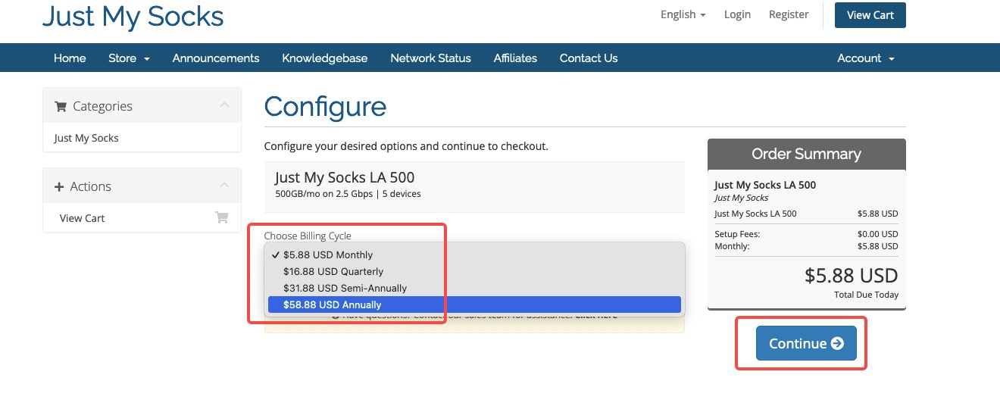
填写优惠码：JMS9272283，获得5.2%的优惠。
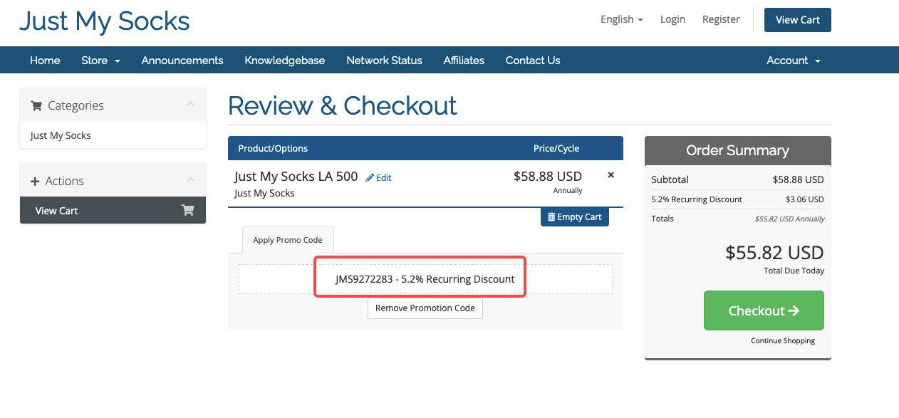
购买成功后，点击 Services -> My Services，就能看到详细的配置信息, 提供Shadowsocks和VMess两种协议。在Server IP中选择对应的地址，aes的是SS协议，v2ray就是vmess协议。
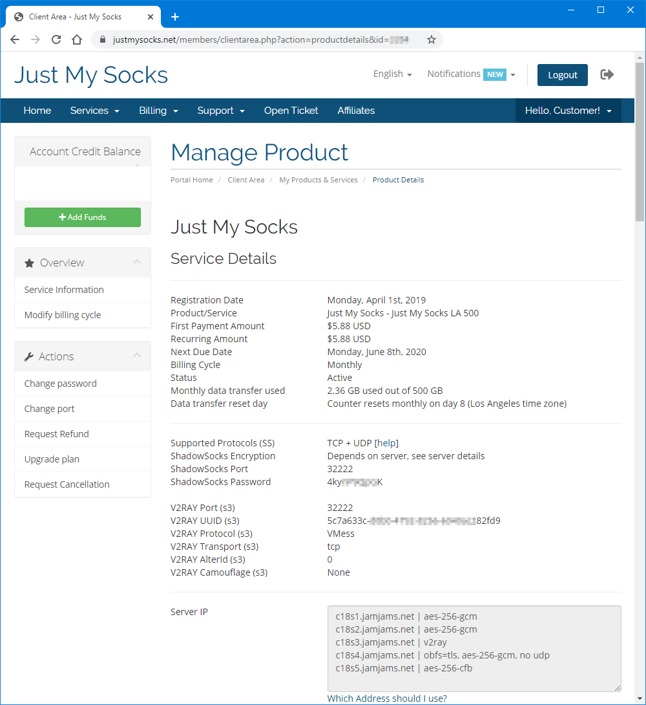
把地址、端口、密码填入VPN代理软件中即可，详细请拉到文章的最后部分。
如何使用搭建好的VPN节点？
搭建好节点服务后，就可以把配置导入VPN或代理软件🪜。
这里列举几款比较常用的：
Windows:
iOS:
详细VPN配置示例：
nekoray:
1. 选中并复制上方节点生成的Clash meta配置
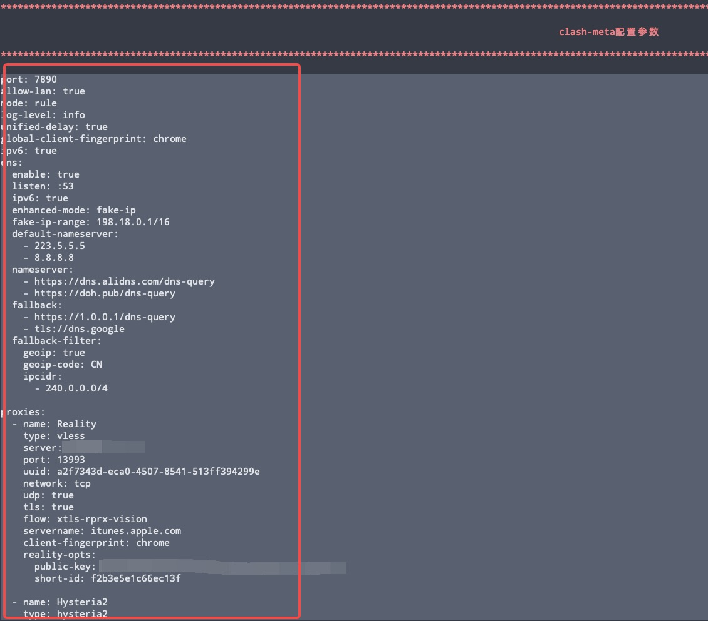
2. 运行nekoray，点击"Server"，选择"Add profile from clipboard"，软件将Reality和Hysteria2配置导入
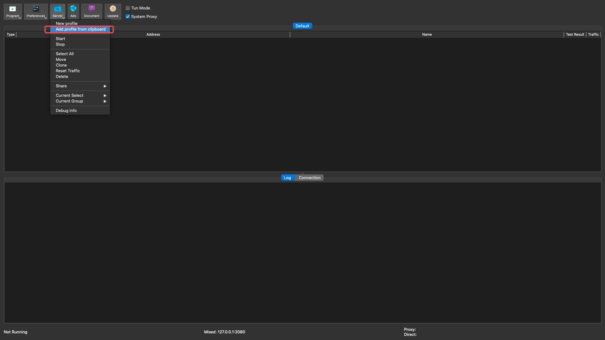
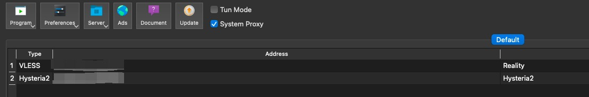
3. 选择其中一项，右键点击"start"，把VPN运行起来，如下图所示：
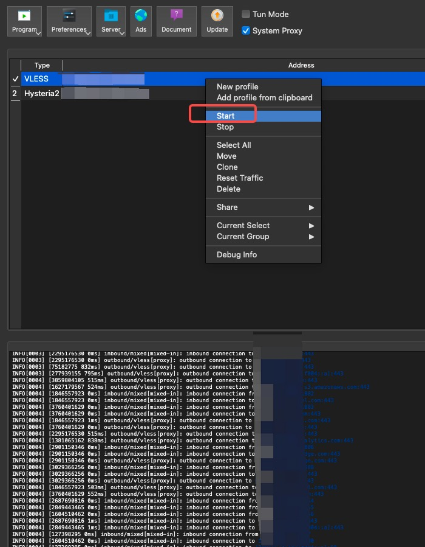
sing-box:
1. 选中并复制上方节点生成的sing-box客户端配置
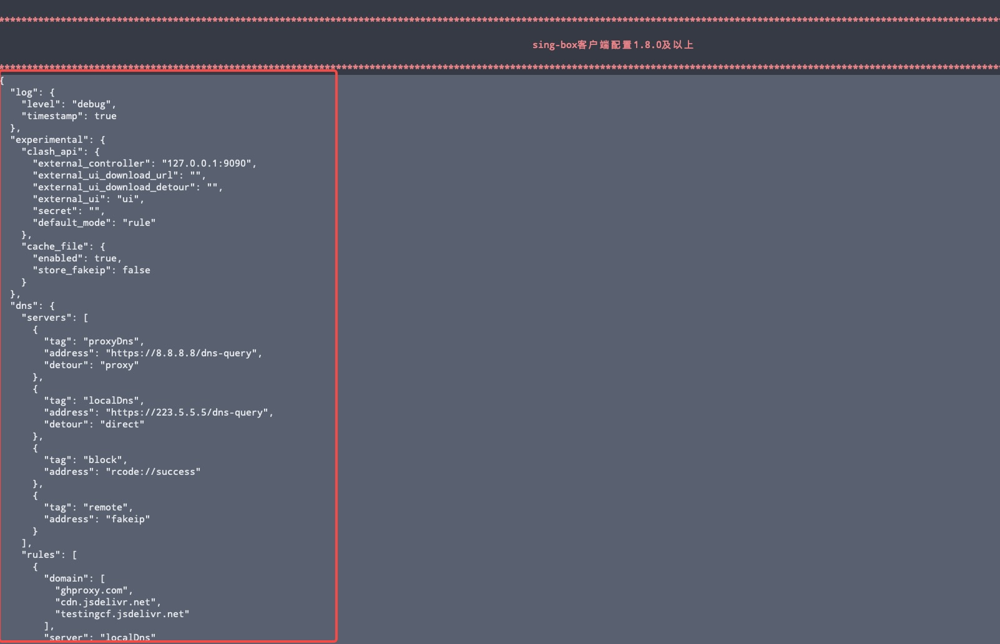
2. 运行sing-box，点击左侧菜单栏"Profiles", 点击"New Profile"
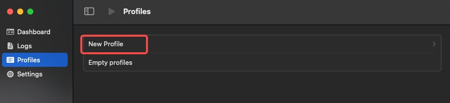
3. 输入配置名称，点击"create"
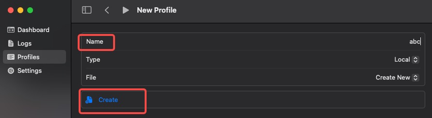
4. 点击刚才创建的profile, 再点击"Edit content"，进入编辑界面
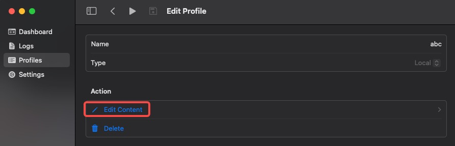
5. 粘贴第1步复制的sing-box配置，点击上方保存按钮，最后点击运行按钮
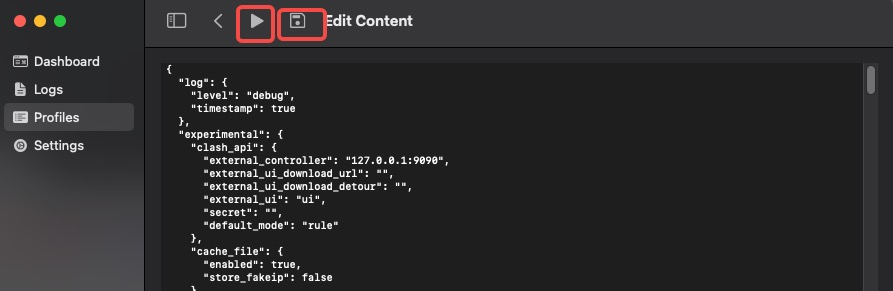
6. 点击左侧菜单栏"Overviews"，有连接和流量数据即为运行成功
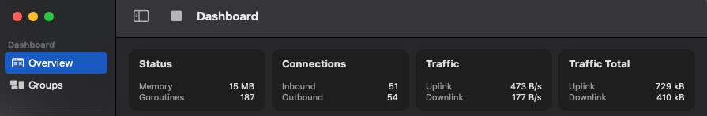
shadowrocket:
直接扫描生成的二维码即可导入配置，再打开开关即可
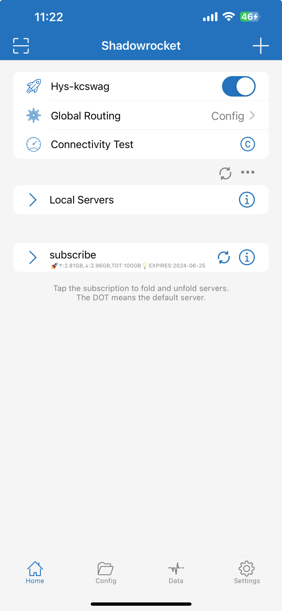
v2rayNG:
和小火箭差不多，扫描二维码导入配置，再打开右下角的开关即可
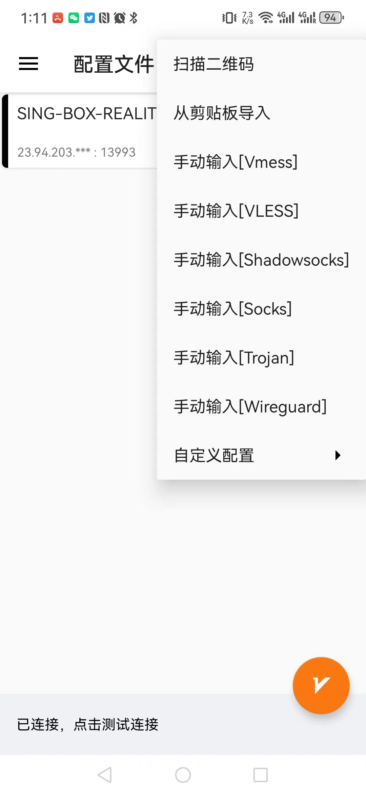
购买了Just My Socks的小伙伴可以，详细配置如下：
shadowrocket:
1. 打开小火箭，点击右上角的"+"
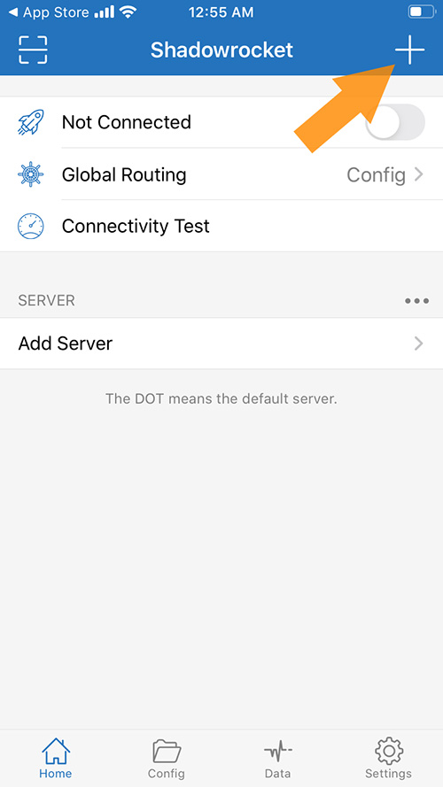
2. Type选择VMess, Address、port、UUID填上Just My Socks中的具体配置
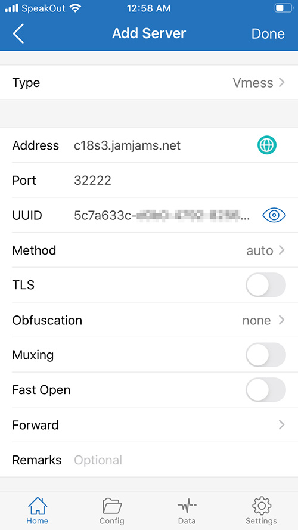
v2rayNG:
1. 点击右上角"+"，选择"手动输入[Vmess]
2. 填写节点对应信息，"用户ID"填写UUID
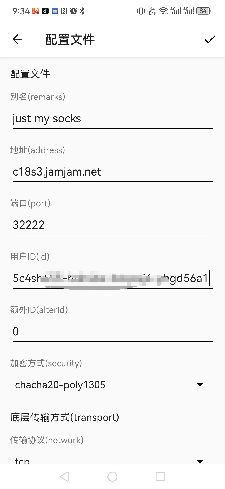
其它代理软件的配置方法基本一致，这里就不一一列举了。
以上就是本次教程的所有内容。如果大家在操作过程中遇到任何问题，欢迎添加我的电报(Telegram)：kcswag